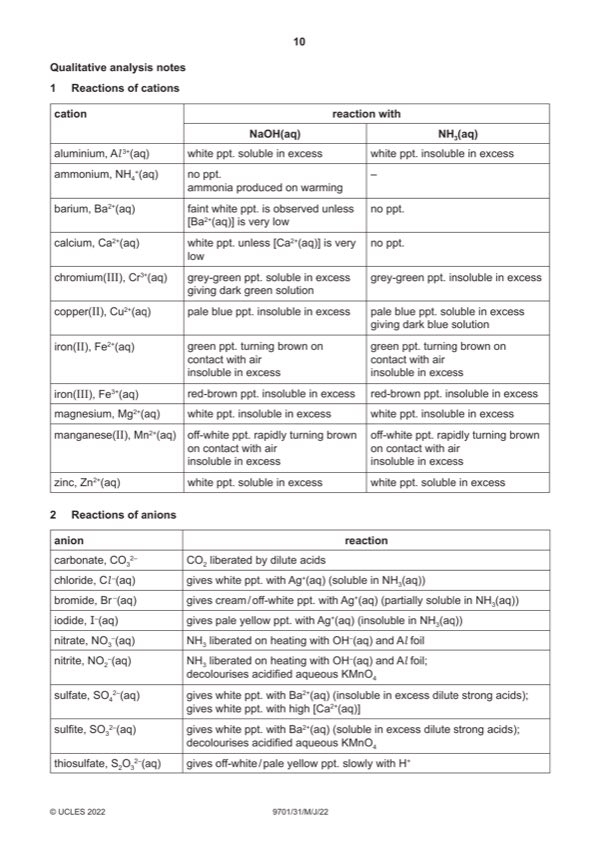

Question 1

Original paper page 10
Part 1(a) — solution
- two burette readings and titre for the rough titration
- initial and final burette readings for two (or more) accurate titrations
- initial / start and (burette) reading / volume
- final / end and (burette) reading / volume
- titre or volume used / added / or FA 2 added
- unit: / cm3 or (cm3) or in cm3 (for each heading) or cm3 unit given for each volume recorded
- two (or more) accurate identical titres (ignoring any that are labelled ‘rough’), then
- two (or more) accurate titres within 0.05 cm3, then
- two (or more) accurate titres within 0.10 cm3, etc
Mark points
- two burette readings and titre for the rough titration
- initial and final burette readings for two (or more) accurate titrations
- initial / start and (burette) reading / volume
- final / end and (burette) reading / volume
- titre or volume used / added / or FA 2 added
- unit: / cm3 or (cm3) or in cm3 (for each heading) or cm3 unit given for each volume recorded
- two (or more) accurate identical titres (ignoring any that are labelled ‘rough’), then
- two (or more) accurate titres within 0.05 cm3, then
- two (or more) accurate titres within 0.10 cm3, etc
Part 1(b) — solution
Answer: AND · AND
Candidate must average two (or more) titres that are within a total spread of not more than 0.20 cm3 1
AND
working / explanation must be shown or ticks must be put next to the two (or more) accurate titres selected
AND
mean quoted to 2 decimal places
Mark points
- Correct result: AND
- Correct result: AND
Part 1(c)(i) — solution
Answer: AND answer to 3 or 4 sig fig
- moles of NaOH used = 0.110 (b) / 1000
Mark points
- moles of NaOH used = 0.110 (b) / 1000
Part 1(c)(ii) — solution
- (c)(i) to calculate Mr = 10.5 / (c)(i) 40
Mark points
- (c)(i) to calculate Mr = 10.5 / (c)(i) 40
Part 1(c)(iii) — solution
- [M1] Identity of carboxylic acid [must be consistent with the Mr in (c)(ii)] 2
- [M2] Skeletal formula (must correspond to candidate’s name of acid)
Mark points
- [M1] Identity of carboxylic acid [must be consistent with the Mr in (c)(ii)] 2
- [M2] Skeletal formula (must correspond to candidate’s name of acid)
Part 1(d)(i) — solution
Correct equation with state symbols 1
NH2CH2COOH(aq) + NaOH(aq) NH2CH2COONa(aq) + H2O(l)
Mark points
- Include the ideas shown in the solution above.
Part 1(d)(ii) — solution
Answer: AND
Student’s titre would be larger 1
AND
Mr of amino acid is 75 / is lower than Mr of FA 1 so more moles of amino acid are present ORA
2022 Page 7 of 12
9701/31 Cambridge International AS & A Level – Mark Scheme May/June 2022
Mark points
- Correct result: AND